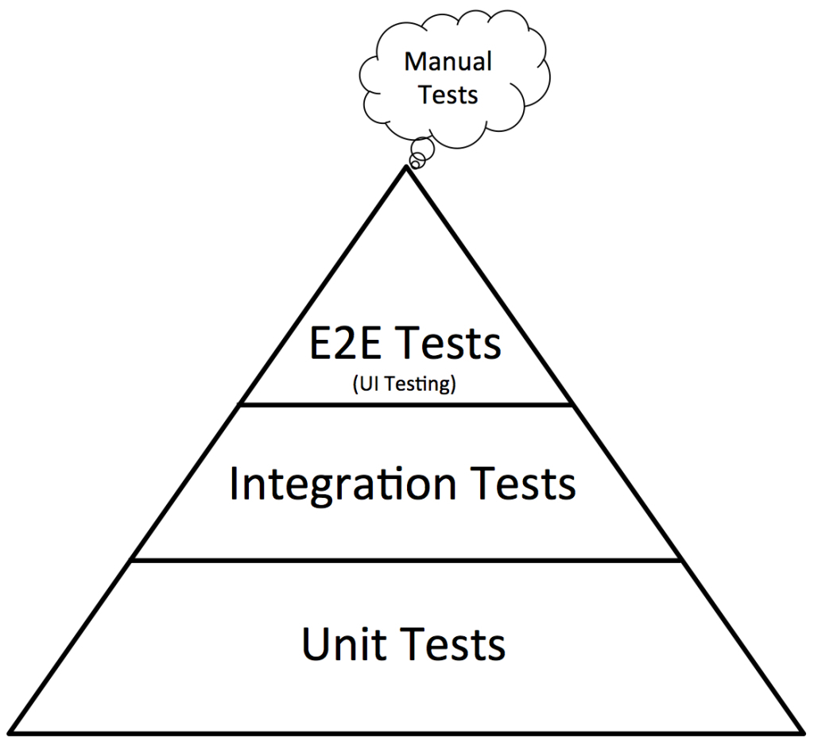

üõ°Ô∏è
Test Driven Development
Técnica de Desenvolvimento Ágil
O que √© TDD? ü§î
É uma técnica de desenvolvimento orientado a testes, onde os testes são feitos antes do código das funcionalidades da aplicação.

Quais os ganhos? üèÖ
- Qualidade do entregável
- Documentação de código
- Garante código limpo e simples
- Feedback instantâneo
- Facilita na refatoração/manutenção
- Menos tempo de debug
Quando e Onde é aplicável? ✍️
Teste unitário ✔️
- O teste é somente sobre uma unidade do sistema.
- Pode ser testado isoladamente com stubs e mocks ou com dependência de outras unidades.
- Abrange todo fluxo lógico que faz parte do escopo da unidade.
- O time decide o que considerar como uma unidade, levando em consideração os paradigmas de programação e tecnologias usadas.
Teste de integração ✔️
- Testa a comunicação entre sistemas ou de entidades de um mesmo sistema.
- Utiliza-se dados/entidades reais. O uso de mocks é feito em casos raros, onde o mock não tem uma ligação direta com o que será testado.
- Por serem mais custosos, a execução pode ser realizada em momentos específicos.
Testes de aceitação & E2E ❌
- Testa se as funcionalidades correspondem com as especificações.
- Comumente utiliza-se BDD para guiar os testes.
- São frágeis, instáveis e custosos na execução.
Pirâmide de testes
Ferramentas üõ†
Testing Frameworks
Fornece um ambiente de execução de testes com ferramentas de linha de comando e API para ajudar a estruturar os testes.
Assertion Libraries
Melhora a legibilidade dos testes escritos.
Double Libraries
Ferramenta para trabalhar com Mocks, Stubs e Spies
Code Coverage
Fornece relatórios que servem como guia para teste ou possíveis refatorações.
Test Runners
Agrupa principais ferramentas de teste fornecendo um ambiente completo para rodar testes.
(Snapshot, Assertions, Friendly CLI’s feedback, Mocks)